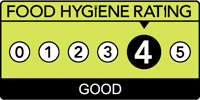

Yun comes from Yunnan, which is one of China's most important food regions. Rice noodles are Yunnan's most popular dish, eaten for breakfast, lunch, dinner. Our Guo Qiao Rice Noodle dish dates back 300 years and cooks for 8 hours.
Questions? Ask YUN House - Camden about their ingredients and cooking methods

All dishes may contain traces of the following allergens: Wheat; Gluten; Peanuts; Nuts; Sesame Seeds; Celery; Soybeans; Milk; Eggs; Mustard; Lupin; Pork; Mollusc; Crustaceans; Fish; Sulphur Dioxide or Alcohol. Please note that if you are pregnant you may need to take caution when consuming any of the above dishes. While YUN try and follow requests where possible, some ingredients are unable to be removed. For any questions regarding the allergen contents of specific dishes please contact the restaurant directly.
Still on the fence about what to order? Would you like to take a break and try our fun classic game of snake, where you can get a snack from a hidden menu when you reach 30 points in normal mode? Of course if you just want to relax you can still try this game (we have easy mode 😂) only the points in easy mode can't be redeemed for free snacks 😢